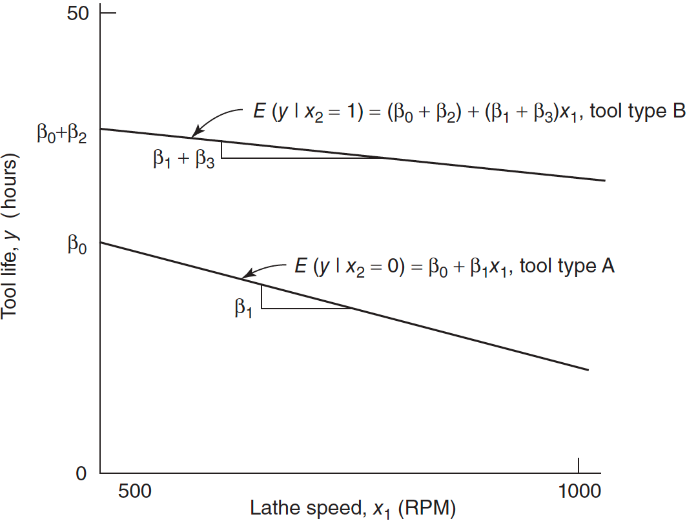
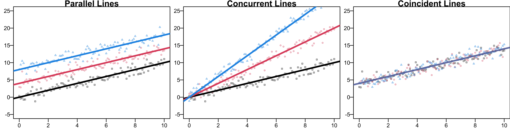

Categorical Variables 🛠
MATH 4780/MSSC 5780 Regression Analysis
Categorical Variables
- Examine the relationship between numerical response and categorical predictors.
- Gender (Female 👩, Male 👨, Other 🏳️🌈) : Gender income/wage gap
- Country (USA 🇺🇸, Canada 🇨🇦, UK 🇬🇧, Germany 🇩🇪, Japan 🇯🇵, Korea 🇰🇷) : Meat consumption level
- Political Party (Republican 🔴, Democratic 🔵, Other ⚫) : Donation to healthcare
- In regression, we may also want to examine the relationship between numerical response and categorical (qualitative) predictors.
- When a categorical variable has many levels/categories, they’re encoded to dummy variables or indicator variables.
- Gender has two levels: female and male
- Blood Type: A, B, AB and O
- Education: high school, bachelor, master, doctoral
- In reality there are lots of categorical variables, especially in social science studies.
- Categorical variables are equally important as numerical variables.
Categorical Variable in Regression
- May draw inappropriate height-weight relationship if gender factor is ignored.
- Because female tend to be shorter and weight less.
- Moreover, the weight increased may be at different rate in gender.
With categorical variable Gender

- Inappropriate height-weight relationship if gender factor is ignored.
- The two groups have different \(\beta_0\) and \(\beta_1\).
- A more appropriate regression model should include the gender variable when we explain the relationship between height and weight.
- The two groups in general will have different \(\beta_0\) and \(\beta_1\). And the difference is generally quite significant.
- This example tells us not only numerical variables, it is also important to include relevant categorical variables that greatly affect the response of interest.
Categorical Variable in Regression: Simpson’s Paradox
Without categorical variable Exam Difficulty

With categorical variable Exam Difficulty

- Marginal relationship: More study hours are associated with lower exam scores.
- Conditional relationship: More study hours are associated with higher exam scores within each difficulty level.
- Simpson’s paradox: An association reverses direction when a third variable is taken into account.
- Students taking difficult exams tend to study more but receive lower scores.
- Within each difficulty level, students who study more tend to receive higher scores.
- Ignoring exam difficulty leads to a misleading interpretation of the relationship.
- Exam difficulty is a confounding variable.
Example 8.1 Tool Life Data (LRA)
Relate the effective life (hours) of a cutting tool \((y)\) used on a lathe to
the lathe speed in revolutions per minute \((x_1)\) (Numerical)
the type of cutting tool used \((x_2)\) (Categorical)
hours speed type
1 19 610 A
2 15 950 A
3 17 720 A
4 15 840 A
5 13 980 A
6 24 530 A
7 13 680 A
8 23 540 A
9 13 890 A
10 19 730 A
11 30 670 B
12 27 770 B
13 25 880 B
14 26 1000 B
15 33 760 B
16 36 590 B
17 26 910 B
18 37 650 B
19 35 810 B
20 44 500 B
- Scatterplot of life against speed without considering the type of cutting tool.
- We may think the distance between data points and the regression fit is a pure random noise, and their variation is that big.
- But in fact those variations may be due to some other variables that are not included in the model, like the type of the tool.
Indicator Variable
- Tool type can be represented as: \[x_2 = \begin{cases} 0 & \quad \text{Tool type A}\\ 1 & \quad \text{Tool type B} \end{cases}\] where \(x_2\) is a dummy variable.
- If a first-order model is appropriate: \[y = \beta_0+\beta_1x_1+\beta_2x_2 + \epsilon, \quad \epsilon \sim N(0, \sigma^2)\]
- Assume that the variance is the same for both levels (type A and B).

- When we label data points by their tool type, we can clearly see that given the same level of the speed, type B tends to have longer life than type A.
- So if we simply ignore the tool type, and predict the tool life based solely on the speed, we are gonna have pretty large prediction error.
- Our fitted line is sort of between the two types, so we underestimates the life of tool B, and overestimate the life of tool A.
- To model and describe the effect of the categorical variable, we use a so-called dummy variable, or indicator variable.
- For example here, we consider two different types of cutting tool, A and B.
- \(x_2 = \begin{cases} 0 & \quad \text{Tool type A}\\ 1 & \quad \text{Tool type B} \end{cases}\)
- If the categorical variable has two categories, we need one dummy variable.
- In general, if a categorical variable has \(k\) categories, we are gonna need \(k-1\) dummy variables put in the regression model.
- first-order means no interaction terms as well as higher polynomial orders.
Interpretation of Coefficients
- For Tool type A \((x_2 = 0)\) the model becomes: \[\begin{align} y &= \beta_0+\beta_1x_1+\beta_2(0) + \epsilon \\ &= \beta_0+\beta_1x_1+ \epsilon \end{align}\]
- For Tool type B \((x_2 = 1)\) the model becomes: \[\begin{align} y &= \beta_0+\beta_1x_1+\beta_2(1) + \epsilon \\ &= (\beta_0 + \beta_2)+\beta_1x_1+ \epsilon \end{align}\]
- Changing from type A to B induces a change in the intercept, but the slope is unchanged and identical.
- Type A is the baseline level.
- Changing from type A to B induces a change in the intercept (slope is unchanged and identical).
- The model includes the response shifting effect.
- Assume that the variance is the same for both levels (type A and B) of the categorical variable.
- Type A is the baseline level. The baseline level is the level corresponding to the dummy variable being zero.
- The original intercept term is for the baseline level.
Parallel Regression Lines
- Two parallel regression lines with a common slope \(\beta_1\) and different intercepts.
- \(\beta_2\) measures the difference in mean tool life resulting from changing from tool type A to B.
\(y = \beta_0+\beta_1x_1+\beta_2x_2 + \epsilon\)

\(\hat{y} = b_0 + b_1 x_1 + b_2 x_2\)

- Two parallel regression lines with a common slope \(\beta_1\) and different intercepts.
- \(\beta_2\) expresses the difference in heights between the two lines, measuring the difference in mean tool life resulting from changing from tool type A to type B.
Model Fitting
- The categorical variable should be of type
characterorfactor.
str(tool_data)'data.frame': 20 obs. of 3 variables:
$ hours: num 18.7 14.5 17.4 14.5 13.4 ...
$ speed: num 610 950 720 840 980 530 680 540 890 730 ...
$ type : chr "A" "A" "A" "A" ... Estimate Std. Error t value Pr(>|t|)
(Intercept) 36.986 3.5104 10.5 7.2e-09
speed -0.027 0.0045 -5.9 1.8e-05
typeB 15.004 1.3597 11.0 3.6e-09- \(\hat{y} = 37 -0.027x_1 +15x_2\)
- All else held constant, type B tools are expected, on average, to have 15 hours longer life than the baseline.
- The dummy variable will be created based on the factor level that is created when the categorical variable is transformed to be of type factor.
- By default, the factor level is created in alphabetical order.
- Can specify level using argument levels in factor() function.
- If factor has been created, can use relevel() to relevel the factor.
B
A 0
B 1Model Checking
Same variance of the errors for both A and B?

Approximately normal

Model specification

Single Model vs. Separate Models
- Two separate models, one for each type, could have been fit to the data. \[y^A = \beta_0^A+\beta_1^Ax_1^A+ \epsilon^A, \quad \epsilon^A \sim N(0, \sigma_A^2)\] \[y^B = \beta_0^B+\beta_1^Bx_1^B+ \epsilon^B, \quad \epsilon^B \sim N(0, \sigma_B^2)\]
If performing well, the single-model approach with dummy variables is preferred.
. . .
- Only one equation to work with, \(y = \beta_0+\beta_1x_1+\beta_2x_2 + \epsilon\), a simpler practical result.
. . .
- If the common slope and equal variance assumptions are reasonable, combining the data allows us to estimate the shared parameters more precisely.
Smaller sampling variability. Smaller standard errors. More precise parameter estimates. Potentially more accurate predictions. - Since two regression lines are expected to model the relationship between tool life and lathe speed, we could have fit two separate models with no dummy variables to the data.
Difference in Slope
- If we expect the slopes to differ, include an interaction term between the variables: \[y = \beta_0+\beta_1x_1+\beta_2x_2 + {\color{blue}{\beta_3x_1x_2}} + \epsilon\]
. . .
- Tool type A \((x_2 = 0)\): \[\begin{align} y &= \beta_0+\beta_1x_1+\beta_2(0) + \beta_3x_1(0) + \epsilon \\ &= \beta_0+\beta_1x_1+ \epsilon \end{align}\]
- Tool type B \((x_2 = 1)\): \[\begin{align} y &= \beta_0+\beta_1x_1+\beta_2(1) + \beta_3x_1(1) + \epsilon \\ &= (\beta_0+ \beta_2) + (\beta_1+\beta_3)x_1+ \epsilon \end{align}\]
- \(\beta_2\) is the change in the intercept caused by changing from type A to type B.
- \(\beta_3\) is the change in the slope caused by changing from type A to type B.
- If we expect the slopes to differ, we can model this phenomenon by including an interaction term between the variables.
- Back to the tool life data, and say we believe there may be different slopes for the two tools. The model we can fit to account for the change in slope is: \[y = \beta_0+\beta_1x_1+\beta_2x_2 + \beta_3x_1x_2 + \epsilon\]
- Tool type A : \[\begin{align} y &= \beta_0+\beta_1x_1+\beta_2(0) + \beta_3x_1(0) + \epsilon \\ &= \beta_0+\beta_1x_1+ \epsilon \end{align}\]
- Tool type B : \[\begin{align} y &= \beta_0+\beta_1x_1+\beta_2(1) + \beta_3x_1(1) + \epsilon \\ &= (\beta_0+ \beta_2) + (\beta_1+\beta_3)x_1+ \epsilon \end{align}\]
Response Function for the Tool Life Example
- \(y = \beta_0+\beta_1x_1+\beta_2x_2 + \beta_3x_1x_2 + \epsilon\) defines two regression lines with different slopes and intercepts.
\(y = \beta_0+\beta_1x_1+\beta_2x_2 + \beta_3x_1x_2+\epsilon\)

\(\hat{y} = b_0 + b_1 x_1 + b_2x_2 + b_3 x_1 x_2\)

- Type A is the baseline level
Regression Model with Interaction
(full_model <- lm(hours ~ speed + type + speed:type, data = tool_data))
Call:
lm(formula = hours ~ speed + type + speed:type, data = tool_data)
Coefficients:
(Intercept) speed typeB speed:typeB
32.7748 -0.0210 23.9706 -0.0119 . . .
(full_model <- lm(hours ~ speed*type, data = tool_data))
Call:
lm(formula = hours ~ speed * type, data = tool_data)
Coefficients:
(Intercept) speed typeB speed:typeB
32.7748 -0.0210 23.9706 -0.0119 - The fitted model is \[\hat{y} = 32.8-0.02x_1+23.97x_2 -0.01x_1x_2\]
Regression Lines
\(y = \beta_0+\beta_1x_1+\beta_2x_2 + \epsilon\)

\(y = \beta_0+\beta_1x_1+\beta_2x_2 + \beta_3x_1x_2+\epsilon\)

Two Models
- The model \(y = \beta_0+\beta_1x_1+\beta_2x_2 + \beta_3x_1x_2 + \epsilon\) is equivalent to fitting two separate regressions:
- \(y = \beta_0+\beta_1x_1+ \epsilon\)
- \(y = \alpha_0 + \alpha_1x_1+ \epsilon\), \(\quad \alpha_0 = \beta_0 + \beta_2\), \(\quad \alpha_1 = \beta_1 + \beta_3\).
How do we test if the 2 regressions are identical?
. . .
- Can use the extra sum of squares method by comparing the full and reduced models.
- \(H_0: \beta_2 = \beta_3 = 0 \quad H_1: \beta_2 \ne 0 \text{ and(or) } \beta_3 \ne 0\)
. . .
We can test whether the relationship between tool speed and expected tool life differs between the two tool types, either in the intercept, the slope, or both.
Rejecting \(H_0\) indicates that the two regression lines are different, but does not necessarily indicate the presence of an interaction effect.
- test if the categorical variable affect intercept and or slope.
- In other words, we can test if the tool type affects the effect of tool speed on the tool life.
Test Effect of Tool Type
- \(H_0: \beta_2 = \beta_3 = 0 \quad H_1: \beta_2 \ne 0 \text{ and(or) } \beta_3 \ne 0\)
Analysis of Variance Table
Model 1: hours ~ speed
Model 2: hours ~ speed * type
Res.Df RSS Df Sum of Sq F Pr(>F)
1 18 1282
2 16 141 2 1141 64.8 2.1e-08 ***
---
Signif. codes: 0 '***' 0.001 '**' 0.01 '*' 0.05 '.' 0.1 ' ' 1\(F_{test} = \frac{SS_R(\beta_2, \beta_3 |\beta_1, \beta_0)/2}{MS_{res}} = \frac{1141/2}{141/16} = 64.75 > F_{\alpha, 2, 20-4}\)
The two regression lines are not identical.
More than 2 Categories
- For a categorical predictor with \(m\) levels, we need \(m-1\) dummies.
- Three tool types, A, B, and C. Then two indicators \(x_2\) and \(x_3\) will be needed:
| Tool Type | \(x_2\) | \(x_3\) |
|---|---|---|
| A | 0 | 0 |
| B | 1 | 0 |
| C | 0 | 1 |
- The regression model (common slope) is \[y = \beta_0+\beta_1x_1+\beta_2x_2 + \beta_3x_3 + \epsilon\]
- Type A is the baseline level.
- Type A is the baseline level. The base line level is the category corresponding value zero for all dummies.
- \(\beta_0\) is the intercept when A is used.
- \(\beta_2\) is the change in the intercept when the tool changes from A to B.
- \(\beta_3\) is the change in the intercept when the tool changes from A to C.
- What is the change in the intercept when the tool changes from B to C.
Example 8.3: More Than 2 Levels (LRA)
- An electric utility is investigating the effect of the size of a single family house \((x_1)\) and the type of air conditioning used on the total electricity consumption \((y)\).
| Type of Air Conditioning | \(x_2\) | \(x_3\) | \(x_4\) |
|---|---|---|---|
| No air conditioning | 0 | 0 | 0 |
| Window units | 1 | 0 | 0 |
| Heat pump | 0 | 1 | 0 |
| Central air conditioning | 0 | 0 | 1 |
Which type is the baseline level?
- An electric utility is investigating the effect of the size of a single family house \((x_1)\) and the type of air conditioning used in the house on the total electricity consumption during summer months \((y)\).
- Since there are 4 categories, 3 dummy variables are used to differentiate their effect on \(y\).
- No air conditioning is the baseline level
Example 8.3: Dummy Variables
The regression model is \(y = \beta_0+\beta_1x_1+\beta_2x_2 + \beta_3x_3 + \beta_4x_4 + \epsilon\)
- 2 predictors, but 4 x’s, because x2, x3 and x4 are for the variable Type of Air
. . .
“No air conditioning” is the baseline level.
| Type of Air Conditioning | \(x_2\) | \(x_3\) | \(x_4\) |
|---|---|---|---|
| No air conditioning | 0 | 0 | 0 |
| Window units | 1 | 0 | 0 |
| Heat pump | 0 | 1 | 0 |
| Central air conditioning | 0 | 0 | 1 |
If the house has
- no air conditioning,
\[y = \beta_0+\beta_1x_1 + \epsilon\]
- window units,
\[y = (\beta_0 + \beta_2)+\beta_1x_1 + \epsilon\]
- a heat pump,
\[y = (\beta_0 + \beta_3) +\beta_1x_1 + \epsilon\]
- central air conditioning,
\[y = (\beta_0 + \beta_4) +\beta_1x_1 + \epsilon\]
- The type “No air conditioning” is the baseline level.
- The model assumes that the relationship between electricity consumption and the size of the house is linear and the slope does not depend on the type of air conditioning system employed.
- The parameters β 2 , β 3 , and β 4 modify the height (or intercept) of the regression model for the different types of air conditioning systems.
- That is, β 2 , β 3 , and β 4 measure the effect of window units, a heat pump, and a central air conditioning system, respectively, compared to no air conditioning.
- Furthermore, other effects can be determined by directly comparing the appropriate regression coefficients. For example, β 3 − β 4 reflects the relative efficiency of a heat pump compared to central air conditioning.
- Negative means saving more energy.
Example 8.3: Interaction
Do you think the model \(y = \beta_0+\beta_1x_1+\beta_2x_2 + \beta_3x_3 + \beta_4x_4 + \epsilon\) is reasonable?
. . .
- It seems unrealistic to assume that the slope \(\beta_1\) relating mean electricity consumption to the house size does NOT depend on air-conditioning type.
- The consumption increases with the house size.
- The rate of increase should be different because a more efficient central air conditioning system should have a consumption rate lower than window units.
- Add interaction between the house size and the type of air conditioning: \[y = \beta_0+\beta_1x_1+\beta_2x_2 + \beta_3x_3 + \beta_4x_4 + \beta_5x_1x_2 + \beta_6 x_1x_3 + \beta_7 x_1x_4 + \epsilon\]
- It would seem unrealistic to assume that the slope of the regression function relating mean electricity consumption to the size of the house does not depend on the type of air conditioning system.
- We would expect the mean electricity consumption to increase with the size of the house, but the rate of increase should be different for a central air conditioning system than for window units because central air conditioning should be more efficient than window units for larger houses.
- There should be an interaction between the size of the house and the type of air conditioning system: \[y = \beta_0+\beta_1x_1+\beta_2x_2 + \beta_3x_3 + \beta_4x_4 + \beta_5x_1x_2 + \beta_6 x_1x_3 + \beta_7 x_1x_4 + \epsilon\]
- The assumption that the variance of energy consumption does not depend on the type of air conditioning system used may be inappropriate.
Example 8.3: Unique Slope and Intercept
\(y = \beta_0+\beta_1x_1+\beta_2x_2 + \beta_3x_3 + \beta_4x_4 + \beta_5x_1x_2 + \beta_6 x_1x_3 + \beta_7 x_1x_4 + \epsilon\)
. . .
“No air conditioning” is the baseline level.
| Type of Air Conditioning | \(x_2\) | \(x_3\) | \(x_4\) |
|---|---|---|---|
| No air conditioning | 0 | 0 | 0 |
| Window units | 1 | 0 | 0 |
| Heat pump | 0 | 1 | 0 |
| Central air conditioning | 0 | 0 | 1 |
No air conditioning: \[y = \beta_0+\beta_1x_1 + \epsilon\]
Window units: \[y = (\beta_0 + \beta_2)+(\beta_1+\beta_5)x_1 + \epsilon\]
Heat pump: \[y = (\beta_0 + \beta_3) +(\beta_1+\beta_6)x_1 + \epsilon\]
Central air conditioning: \[y = (\beta_0 + \beta_4) +(\beta_1+\beta_7)x_1 + \epsilon\]
- \(\beta_5\) is the effect of window units on the slope, comparing to the slope when no air conditioning is used.
More Than One Categorical Variable: Model
- Frequently several categorical variables must be incorporated into the model.
- Suppose in the cutting tool life example a second categorical variable, the type of cutting oil used, must be considered.
- Assuming that the variable has two levels: \[x_3 = \begin{cases} 0 & \quad \text{low-viscosity oil used}\\ 1 & \quad \text{medium-viscosity oil used} \end{cases}\]
- A regression model relating tool life \((y)\) to cutting speed \((x_1)\), tool type \((x_2)\), and type of cutting oil \((x_3)\) is \[y = \beta_0+\beta_1x_1+\beta_2x_2 + \beta_3x_3 + \epsilon\]
. . .
❗ The model has the same expression as the model with only one categorical variable having 3 categories. But the meaning is totally different!
- Clearly the slope β 1 of the regression model relating tool life to cutting speed does not depend on either the type of tool or the type of cutting oil. The intercept of the regression line depends on these factors in an additive fashion.
More Than One Categorical Variable: Interaction
- Add interactions between cutting speed \(x_1\) and the two categorical variables: \[y = \beta_0+\beta_1x_1+\beta_2x_2 + \beta_3x_3 + {\color{blue}{\beta_4x_1x_2}} + {\color{blue}{\beta_5x_1x_3}} + \epsilon\]
| Tool Type | Cutting Oil | Regression Model |
|---|---|---|
| A \(\small (x_2 = 0)\) | Low-viscosity \(\small (x_3 = 0)\) | \(\small y = \beta_0+\beta_1x_1 + \epsilon\) |
| B \(\small (x_2 = 1)\) | Low-viscosity \(\small (x_3 = 0)\) | \(\small y = (\beta_0+ \beta_2) + (\beta_1+\beta_4)x_1 + \epsilon\) |
| A \(\small (x_2 = 0)\) | Medium-viscosity \(\small (x_3 = 1)\) | \(\small y = (\beta_0+ \beta_3) + (\beta_1+\beta_5)x_1 + \epsilon\) |
| B \(\small (x_2 = 1)\) | Medium-viscosity \(\small (x_3 = 1)\) | \(\small y = (\beta_0+ \beta_2 + \beta_3) + (\beta_1+\beta_4 + \beta_5)x_1 + \epsilon\) |
- Each combination results in a separate regression line with different slopes and intercepts.
- Changing from low to medium-viscosity cutting oil changes the intercept by \(\beta_3\) and the slope by \(\beta_5\) regardless of the type of tool used.
- No interaction between the 2 categorical variables.
- Each combination of tool type and cutting oil results in a separate regression line, with different slopes and intercepts.
- Changing from low to medium-viscosity cutting oil changes the intercept by \(\beta_3\) and the slope by \(\beta_5\) regardless of the type of tool used. The model is still additive with respect to the levels of the indicator variables.
Interaction between Categorical Variables
- Add a cross-product term involving the two dummy variables \(x_2\) and \(x_3\) to the model: \[y = \beta_0+\beta_1x_1+\beta_2x_2 + \beta_3x_3 + \beta_4x_1x_2 + \beta_5x_1x_3 + {\color{blue}{\beta_6x_2x_3}} + \epsilon\]
| Tool Type | Cutting Oil | Regression Model |
|---|---|---|
| A \(\small (x_2 = 0)\) | Low-viscosity \(\small (x_3 = 0)\) | \(\small y = \beta_0+\beta_1x_1 + \epsilon\) |
| B \(\small (x_2 = 1)\) | Low-viscosity \(\small (x_3 = 0)\) | \(\small y = (\beta_0+ \beta_2) + (\beta_1+\beta_4)x_1 + \epsilon\) |
| A \(\small (x_2 = 0)\) | Medium-viscosity \(\small (x_3 = 1)\) | \(\small y = (\beta_0+ \beta_3) + (\beta_1+\beta_5)x_1 + \epsilon\) |
| B \(\small (x_2 = 1)\) | Medium-viscosity \(\small (x_3 = 1)\) | \(\small y = (\beta_0+ \beta_2 + \beta_3 + \beta_6) + (\beta_1+\beta_4 + \beta_5)x_1 + \epsilon\) |
- Changing from low to medium-viscosity cutting oil changes the intercept by \(\beta_3\) if tool type A is used.
- The same change in cutting oil changes the intercept by \(\beta_3 + \beta_6\) if tool type B is used.
- The addition of the cross-product term \(\beta_6x_2x_3\) results in the effect of one indicator variable on the intercept depending on the level of the other indicator variable.
Comparing Regression Models
- Consider simple linear regression where the \(n\) observations can be formed into \(M\) groups, with the \(m\)-th group having \(n_m\) observations.
- The most general model consists of \(M\) separate equations: \[y = \beta_{0m} + \beta_{1m}x + \epsilon, \quad m = 1, 2, \dots, M\]
- We are interested in comparing this general model to a more restrictive one.

Parallel Lines (Example 8.1 where \(M = 2\))
All \(M\) slopes are identical \(H_0: \beta_{11} = \beta_{12} = \cdots = \beta_{1M} = \beta_1\)
Full Model \((F)\): \(y = \beta_{0m} + \beta_{1m}x + \epsilon, \quad m = 1, 2, \dots, M\).
Reduced Model \((R)\): \(y = \beta_0 + \beta_1x + \color{blue}{\beta_2D_1 + \beta_3D_2 + \cdots + \beta_{M-1}D_{M-1}}+\epsilon\), where \(D_1, \dots, D_{M-1}\) are dummies.
-
\(F_{test} = \frac{(SS_{res}(R) - SS_{res}(F))/(df_{R} - df_{F})}{SS_{res}(F)/df_{F}}\)
- \(df_{R} = n - (M+1)\)
- \(df_{F} = n - 2M\)
- \(SS_{res}(F)\) is the sum of \(SS_{res}\) from each separate regression

- Use the extra-sum-of-squares method to test the hypothesis
- All \(M\) slopes are identical, \(\beta_{11} = \beta_{12} = \cdots = \beta_{1M}\), but the intercepts may differ.
- Reduced Model \((RM)\): \(y = \beta_0 + \beta_1x + \beta_2D_1 + \beta_3D_2 + \cdots + \beta_{M-1}D_{M-1}+\epsilon\), where \(D_1, \dots, D_{M-1}\) are dummy variables.
-
\(F_{test} = \dfrac{(SS_{res}(RM) - SS_{res}(FM))/(df_{RM} - df_{FM})}{SS_{res}(FM)/df_{FM}}\)
- \(df_{RM} = n - (M+1)\)
- \(df_{FM} = \sum_{m=1}^M(n_m - 2) = n - 2M\)
- \(SS_{res}(FM)\) is the sum of \(SS_{res}\) from each separate regression
- If the reduced model is as satisfactory as the full model, then \(F_{test}\) will be small compared to \(F_{\alpha,df_{RM}−df_{FM}, df_{FM}}.\)
Concurrent Lines
- All \(M\) intercepts are equal, \(H_0: \beta_{01} = \beta_{02} = \cdots = \beta_{0M}= \beta_0\)
-
Reduced model: \(y = \beta_0 + \beta_1x + \color{blue}{\beta_2xD_1 + \beta_3xD_2 + \cdots + \beta_{M-1}xD_{M-1}}+\epsilon\).
- \(df_{R} = n - (M+1)\)
- Assume concurrence at the origin.

- All \(M\) intercepts are equal, \(H_0: \beta_{01} = \beta_{02} = \cdots = \beta_{0M}\), but the slopes may differ.
-
Reduced model: \(y = \beta_0 + \beta_1x +\beta_2xD_1 + \beta_3xD_2 + \cdots + \beta_{M-1}xD_{M-1}+\epsilon\).
- \(df_{R} = n - (M+1)\)
- Assume concurrence at the origin.
- All \(M\) intercepts are equal, \(H_0: \beta_{01} = \beta_{02} = \cdots = \beta_{0M}\), but the slopes may differ.
-
Reduced model: \(y = \beta_0 + \beta_1x +\beta_2xD_1 + \beta_3xD_2 + \cdots + \beta_{M-1}xD_{M-1}+\epsilon\).
- \(df_{R} = n - (M+1)\)
- Assume concurrence at the origin.
Coincident Lines
- Both the \(M\) slopes and the \(M\) intercepts are the same,
\(H_0: \beta_{11} = \beta_{12} = \cdots = \beta_{1M} = \beta_1\), \(\beta_{01} = \beta_{02} = \cdots = \beta_{0M} = \beta_0\) -
Reduced model: \(y = \beta_0 + \beta_1x+\epsilon\)
- \(df_{R} = n - 2\)
- Dummy variables are not necessary in the test of coincidence.

Naming Inputs
When an input has only two levels, we prefer to code it with a single variable and name it appropriately.
For example, the name
maleis more descriptive thansex_1andsex_2.
-
male= 1 for males and 0 for females
-
sex_1= 1 for females and 0 otherwise -
sex_2= 1 for males and 0 otherwise
Index and Indicator Variables
-
Index variables divide a population into categories.
-
male= 1 for males and 0 for females -
age= 1 for ages 18–29, 2 for ages 30–44, 3 for ages 45–64, 4 for ages 65+ -
state= 1 for Alabama, …, 50 for Wyoming -
countyindexes for the 3082 counties in the United States.
-
. . .
-
Indicator variables are 0/1 predictors based on index variables.
-
sex_1= 1 for females and 0 otherwise -
sex_2= 1 for males and 0 otherwise -
age_1= 1 for ages 18–29 and 0 otherwise -
age_2= 1 for ages 30–44 and 0 otherwise -
age_3= 1 for ages 45–64 and 0 otherwise -
age_4= 1 for ages 65+ and 0 otherwise - 50 indicators for state
- 3082 indicators for county
-
Using Continuous rather than Discrete Predictors
A common mistake is to take a numerical measure and replace it with a binary “pass/fail” score
Suppose we tried to predict election winners, rather than continuous votes.
Such a model would not work as well, as it would discard much of the information in the data. (for example, the distinction between a candidate receiving 51% or 65% of the vote)
Even if our only goal is to predict the winners, we are better off predicting continuous vote shares and then transforming them into predictions about winners.
Using Discrete rather than Continuous Predictors
Include age with four indicator variables: 18–29, 30–44, 45–64, and 65+
Income “under $50k,” “$50k–$100k,” “$100k-$250k”, “over $250k”